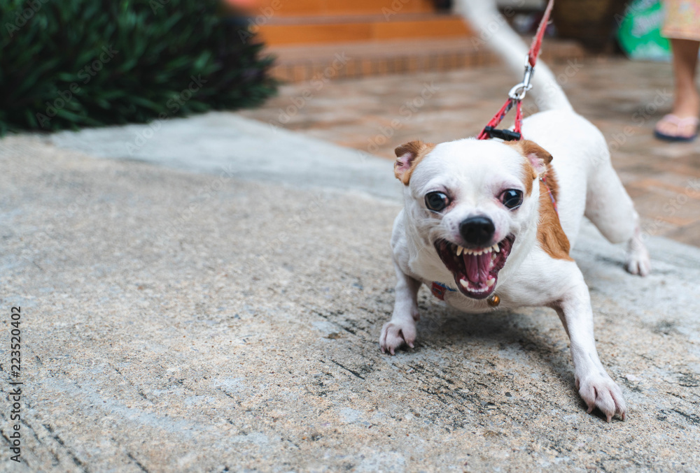

Perros en Adopción
¡Porque la educación es uno de los pilares fundamentales de toda sociedad, ahí estamos!
Uno de los programas más importantes de Fundación Arca es “Educando en Tenencia Responsable”,
centrado en enseñar a las niñas y niños de todas las edades a relacionarse con animales de otras especies,
aprendiendo de tenencia responsable y asimilando su propio desarrollo, emociones y personalidades como niños
y adolescentes a través de la realización de charlas, seminarios, capacitaciones, espectáculos y exposiciones,
entre otras actividades de contenido didáctico.
Nuestros Perros que Buscan Familia
|  | Cachulo |
 |
Niña |
 |
Flaca |